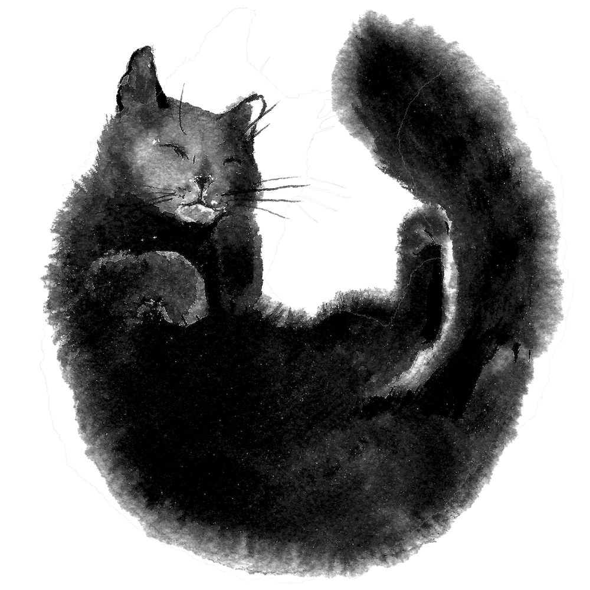

¡Hola! Soy Juli González, ilustradora acuarelista especializada en universo animal y creadora del proyecto "Retrato Animal".
Formé mis estudios de dibujo en la UNA y en Arte Digital en la Escuela Da Vinci. En estos últimos años profundicé en acuarela junto a Sarah Stokes y Endre Penovac.
A partir de la acuarela desarrollo imágenes que combinan sensibilidad artesanal con aplicación editorial, pensadas para portadas, papelería, encuadernación y proyectos visuales.
Exploro la mancha como punto de partida para encontrar formas y gestos que den vida a lo animal, combinándola con decisiones más precisas de composición. Busco trasladar la expresividad de lo hecho a mano a piezas que construyen identidad y narrativa, manteniendo visible la huella artesanal incluso en contextos reproducidos.
Espero que disfrutes el recorrido por mi trabajo. Muchas gracias por tu tiempo.

Hello! I'm Juli González, a watercolor illustrator specialized in the animal world and creator of the “Retrato Animal” project.
I studied drawing at UNA and Digital Art at Da Vinci School. In recent years, I have deepened my watercolor practice alongside Sarah Stokes and Endre Penovac.
Through watercolor, I create images that combine artisanal sensitivity with editorial application, designed for covers, stationery, bookbinding, and visual projects.
I explore the stain as a starting point to find forms and gestures that bring animals to life, combining it with more precise compositional decisions. I aim to translate the expressiveness of handmade work into pieces that build identity and narrative, keeping the artisanal mark visible even in reproduced contexts.
I hope you enjoy exploring my work. Thank you very much for your time.